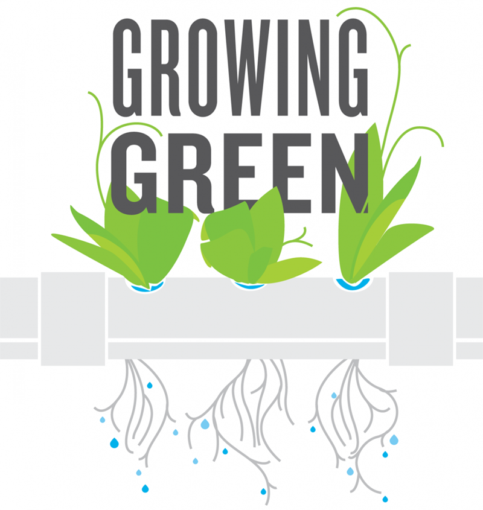

Lemelson-MIT Program
Preface
1
Chill Out
1.1
Educator Guide
1.2
Student Guide
2
Electronic Textiles
2.1
Educator Guide
2.2
Student Guide
3
Growing Green
3.1
Educator Guide
3.2
Student Guide
4
Noise Makers
4.1
Educator Guide
4.2
Student Guide
5
Pump It Up
5.1
Educator Guide
5.2
Student Guide
6
Shoe Soles
6.1
Educator Guide
6.2
Student Guide
7
Super Lens
7.1
Educator Guide
7.2
Student Guide
8
U Control
8.1
Educator Guide
8.2
Student Guide
References
Published with bookdown
JV InvenTeams Activity Guides
Meeting 3
Growing Green
 Unit overview text
3.1
Educator Guide
Educator Guide version
3.2
Student Guide
Student Guide version